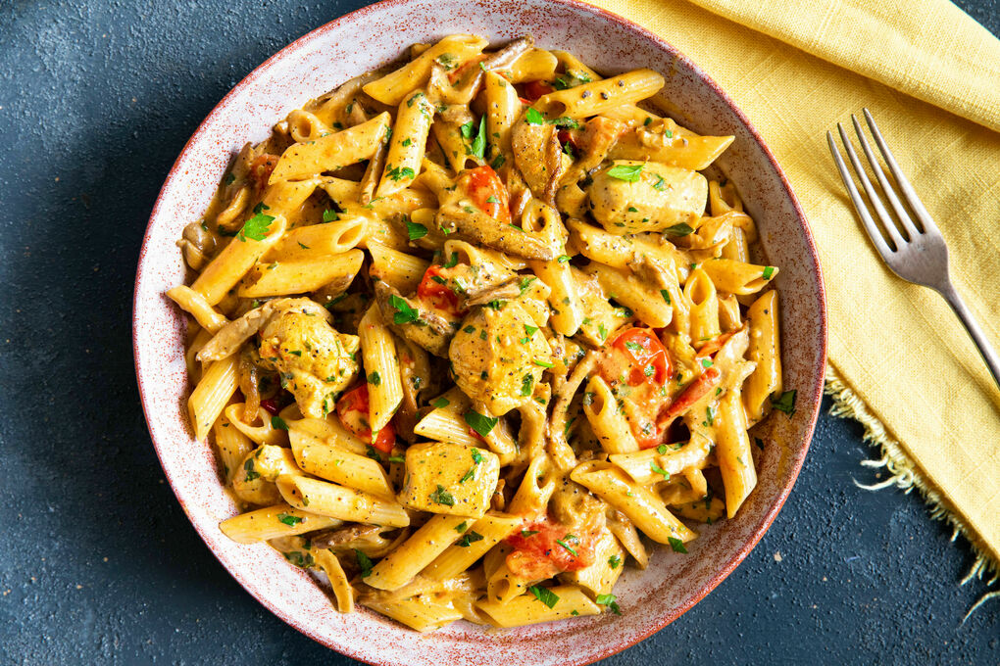

Pasta met curry

Ingrediënten
- 400 g tagliatelle
- 500 g kippendijfilet
- 250 ml kokosmelk
- 4 preistengels
- 2 groene appels
- 1 el currykruiden
Bereiding
- Snij de prei doormidden, spoel goed af met water en snij in kleine ringen.
- Doe in een vergiet en spoel af onder koud water.
- Zet een grote brede pan op het vuur, voeg er wat olijfolie aan toe en bak de kippendijfilet rondom bruin voor zo’n 3 minuten.
- Zet ondertussen een grote pot met water op en breng aan de kook. Voeg de tagliatelli toe en kook volgens de instructies.
- Voeg de prei toe bij de kip en currykruiden en laat stoven tot hij zacht is. De currykruiden zouden heerlijk moeten gaan geuren.
- Schil de appels en snij in hapklare stukjes
- Voeg de kokosmelk toe, samen met de appelstukjes. Is het geheel wat te dik, leng dan aan met wat water. Laat 10 minuutjes sudderen. Breng op smaak met zout en wat peper.
- Giet de pasta af en meng met de saus.